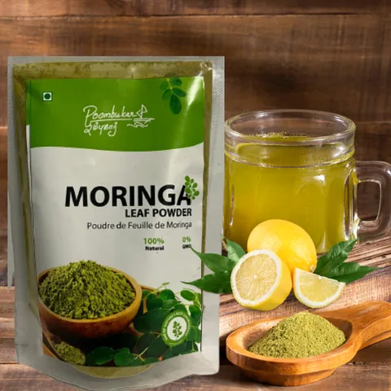
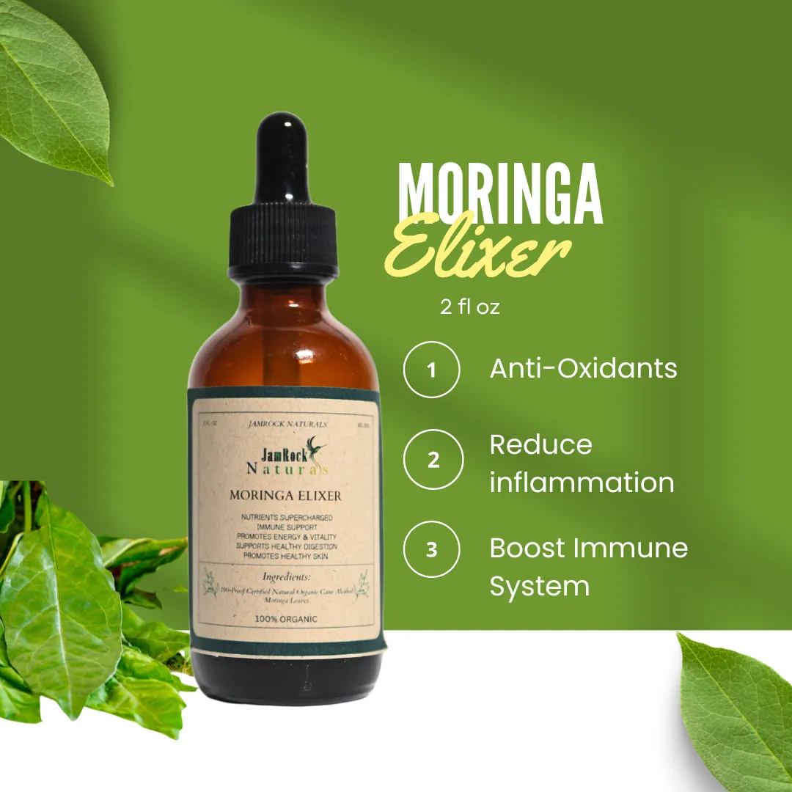

Élixirs naturels · 3 min de lecture
Élixir au Moringa : un concentré naturel pour nourrir le corps et renforcer la vitalité


Aujourd’hui, je te présente un élixir naturel à base de moringa, une plante exceptionnelle souvent surnommée l’arbre de vie.
Simple, rapide et puissant, cet élixir soutient l’organisme en profondeur, renforce l’immunité et apporte une énergie durable, sans stimulant artificiel.
C’est un allié idéal en période de fatigue, de stress, de baisse d’énergie ou lors des changements de saison.
👉 Je tiens à vous rappeler une règle d’or que j’aime beaucoup et qui guide mes choix au quotidien : si la nature ne l’a pas créé, ne le buvez pas.
🍃 Recette de l’Élixir Vitalité au Moringa
Ingrédients
1 cuillère à café de poudre de moringa (ou feuilles séchées finement broyées)
200 ml d’eau tiède ou chaude (non bouillante)
1 cuillère à soupe de miel (optionnel)
Le jus d’½ citron (optionnel, pour une meilleure assimilation)
Préparation
Verse l’eau dans une tasse.
Ajoute la poudre de moringa et mélange soigneusement.
Incorpore le miel et/ou le citron si souhaité.
Bois tiède, lentement, en conscience.
💪 Bienfaits essentiels de l’Élixir au Moringa
Renforce l’immunité
Le moringa est riche en vitamines (A, C, E), minéraux et antioxydants qui soutiennent les défenses naturelles.Apporte énergie et vitalité
Grâce à sa concentration exceptionnelle en nutriments, il aide à lutter contre la fatigue physique et mentale.Soutient la digestion et la détoxification
Il favorise l’équilibre intestinal et participe à l’élimination des toxines.Protège l’organisme
Ses propriétés anti-inflammatoires et antioxydantes contribuent à préserver les cellules du stress oxydatif.
🔬 Pourquoi cet élixir est-il si puissant ?
Le moringa est considéré comme l’un des aliments les plus nutritifs au monde.
Il contient :
des protéines végétales complètes,
du fer, du calcium, du magnésium,
des antioxydants naturels protecteurs.
Associé à l’eau tiède (et éventuellement au citron), il devient facilement assimilable, offrant à ton corps ce dont il a réellement besoin pour fonctionner de manière optimale.
☕ Astuce d’utilisation
À consommer 1 fois par jour, le matin ou en début de journée.
Peut aussi être pris en cure de 2 à 3 semaines, notamment en période de fatigue ou de transition saisonnière.
Évite l’eau bouillante pour préserver les nutriments du moringa.
👥 À qui s’adresse cet élixir ?
À ceux qui veulent augmenter naturellement leur énergie
À ceux qui recherchent une nutrition simple et complète
À ceux qui souhaitent soutenir leur immunité sans produits transformés
À toute personne en quête d’un rituel santé 100 % naturel
⚠️ Important
Commence par de petites quantités si tu découvres le moringa.
En cas de traitement médical ou de condition particulière, demande conseil à un professionnel de santé.
✍️ À propos de l’auteur
Je suis également auteur de livres bien-être sous le pseudo Chest0 JM.S.
Je crée et partage des guides pratiques, des élixirs naturels et des programmes santé accessibles à tous, pour améliorer la vitalité physique, mentale et alimentaire.
📚 Mes ouvrages sont disponibles sur Amazon pour celles et ceux qui souhaitent aller plus loin dans leur transformation bien-être.
🔗 Retrouve tout mon univers bien-être ici :
👉 https://linktr.ee/Chest00
✨ Nourris ton corps avec intelligence, simplicité et respect du vivant. La nature a déjà tout prévu.
👉 À lire aussi : La Spiruline, un super-aliment
Plus de 40 recettes d'élixirs dans les livres Chest0.
Voir les livres